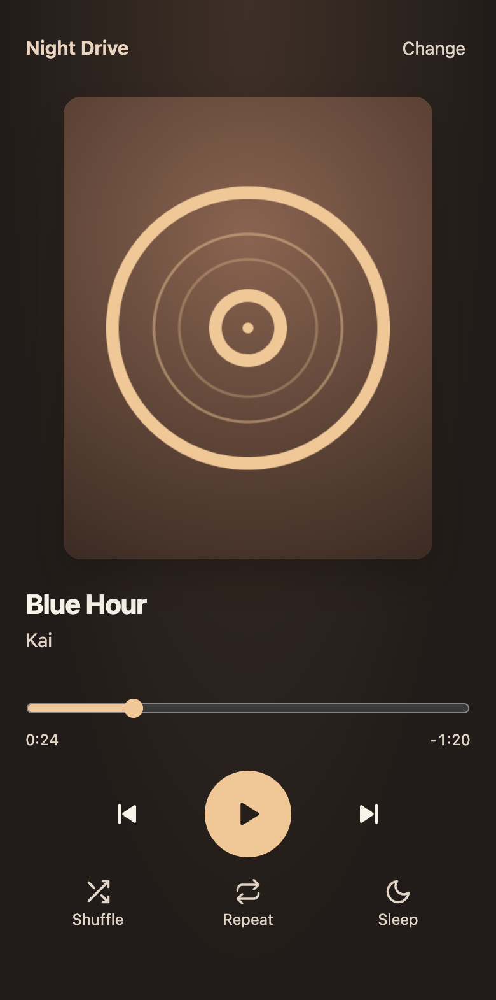

Play your saved clips as a playlist.
I built a web player for the edits and mixes I saved on TikTok. A browser extension reads my collections, including private ones, through my existing session.
See how it worksTested in Chromium, desktop Brave, and Safari on an iPhone simulator.

How it works
-
Sign in on TikTok
The extension reads saved collections through the browser’s existing session.
-
Choose a collection
The website builds a queue and remembers your place when you return.
-
Play the queue
The player streams audio from TikTok. While the page is visible, it can play the muted video in sync.
What I built
The website handles the queue, playback, and resume. The extension handles collection access. If an audio link expires or playback stalls, the player tries a fresh link for the same clip.
Safari on an iPhone simulator showed live video in sync with audio. Lock screen artwork and controls still need a test on a physical iPhone.